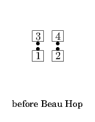
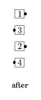
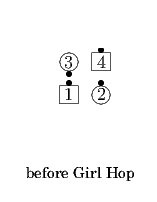
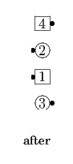
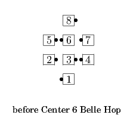

<anyone> Hop
From any applicable non T-Bone 2x2 (usually Facing Couples): Designated dancers Walk as others Dodge; all Hinge. Ends in a Wave or Inverted Line.
   
This call can also be applied to columns (3x2 or 4x2) as long as the dancers are oriented in such a way that they will all be able to Hinge after they do their first part.


© Copyright 2004-2017 Vic Ceder and CALLERLAB Inc., The International Association of Square Dance Callers. Permission to reprint, republish, and create derivative works without royalty is hereby granted, provided this notice appears. Publication on the Internet of derivative works without royalty is hereby granted provided this notice appears. Permission to quote parts or all of this document without royalty is hereby granted, provided this notice is included. Information contained herein shall not be changed nor revised in any derivation or publication.